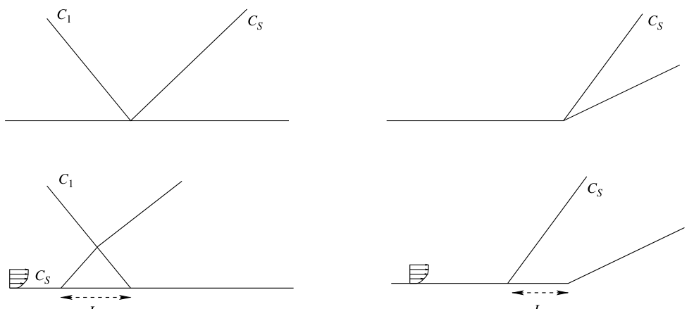
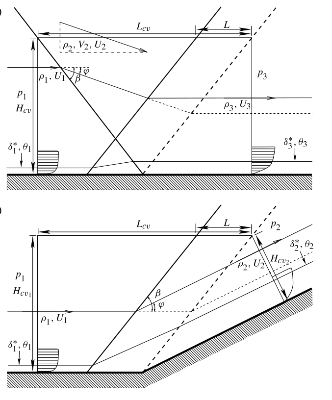
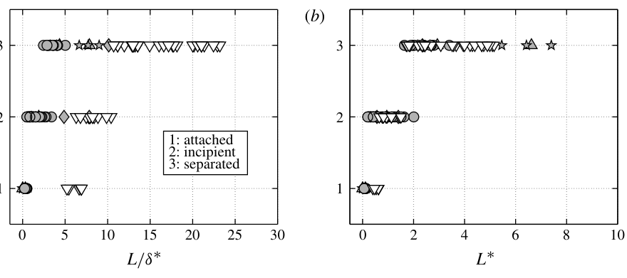
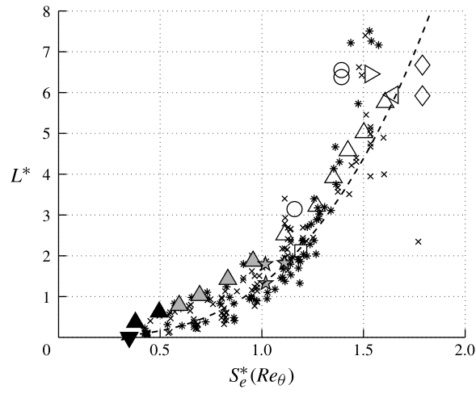

01中文摘要
基于质量守恒建立湍流激波/边界层干扰模型，以统一文献中因几何和气动条件不同而呈现的多样流动组织。该模型给出与几何无关的干扰长度标度方法，适用于压缩拐角和入射-反射激波干扰；提出主要依赖自由来流马赫数和气流偏转角的压力跃升标度，并将其解释为分离判据，从而将湍流SWBLI分为附着、起始分离和完全分离；模型还计入干扰长度对雷诺数和马赫数的依赖，并用大量已有数据验证。
原始摘要（英文/原文）
A model based on mass conservation properties is developed for shock-wave/boundarylayer interactions (SWBLIs), aimed at reconciling the observed great diversity in flow organization documented in the literature, induced by variations in interaction geometry and aerodynamic conditions. It is the basis for a scaling approach for the interaction length that is valid independent of the geometry of the flow (considering compression corners and incident-reflecting shock interactions). As part of the analysis, a scaling argument is proposed for the imposed pressure jump that depends principally on the free-stream Mach number and the flow deflection angle. Its interpretation as a separation criterion leads to a successful classification of the separation states for turbulent SWBLIs (attached, incipient or separated). In addition, the dependence of the interaction length on the Reynolds number and the Mach numbers is accounted for. A large compilation of available data provides support for the validity of the model. Some general properties on the state of the flow are derived, independent of the geometry of the flow and for a wide range of Mach numbers and Reynolds numbers.
02阅读说明
理论/数据分析型论文（模型推导 + 文献数据汇编 + 两组 PIV 验证），JFM 2013, vol.714, pp.505–535，共31页。全文完整，含带页码文本与15项图/表清单。公式在文本层基本可读，但第10–11、20页存在双栏错位；关键式 (2.4)–(2.16)、(2.17)–(2.24)、(4.1)–(4.2) 已回读原PDF第12–14、18、25–26页逐式核对。图件/表齐全，图9、图11 为扫描式灰度图，定量细节以正文与图注为准。 文章类型：期刊
03一句话核心与三句话摘要
质量守恒导出 SWBLI 长度标度 L* 与分离判据 S*e=kΔP/qe，统一压缩拐角与反射激波数据。
- SWBLI 的相互作用长度 L 长期缺乏统一标度：以 δ*、τw 归一的结果受几何、Mach 数与 Reynolds 数影响，同一分离态下数据可相差数倍（第5–8页、图2、图3）。 原文明确
- 作者对入射反射激波与压缩拐角分别建立二维定常控制体，由质量（及动量）守恒并代入斜激波关系，得到 L*=(L/δ*in)G3(Me,φ)=ṁ*out/ṁ*in−1，并以压力力/惯性力量级平衡提出 S*e=kΔP/qe（第9–19页）。 AI概括
- 汇编实验与数值数据后，L* 与 S*e 落在单一趋势线上（L*=1.3S*e³，R²=0.9428，散射约±15%），S*e<1 为附着、≥1 为分离，且该判据主要依赖 Me 与 φ、对 Re 仅弱依赖（第19–26页）。 AI概括
04核心内容清单
| 要点 | 类型 | 重要性 | 原文依据 | 属性 |
|---|---|---|---|---|
| 相互作用长度 L 定义为分离激波脚到无粘入射激波壁面撞击点（反射）或拐角（压缩斜坡）的距离；大分离时可粗略代表分离长度 Lsep。 | 定义 | A | 第3页，图1 | 原文明确 |
| 传统 L/δ*~ΔP/2τw 标度失效：同分离态数据散射达500%，并存在 Re、Mach 与几何系统趋势。 | 数据再分析 | A | 第5–7页，图2 | 原文明确 |
| 用 S*=ΔP/ΔPsep 按分离态分类后，反射激波的无量纲长度仍比压缩拐角大2–4倍，几何依赖未消除。 | 数据再分析 | A | 第8页，图3 | 原文明确 |
| 控制体质量守恒给出反射与拐角两种 L 的代数式 (2.6)、(2.9)，仅依赖上下游 δ* 与斜激波给定的 ρ、U。 | 推导 | A | 第12页，式(2.6)、(2.9) | 原文明确 |
| 统一为 L/δ*in=[sin(β−φ)/(sinβ sinφ)](ρoutUoutδ*out/ρinUinδ*in−1)，引入质量流亏损 ṁ*=ρUδ* 得 L*=(L/δ*in)G3=ṁ*out/ṁ*in−1。 | 推导 | A | 第13页，式(2.12)–(2.16) | 原文明确 |
| 新标度把两种几何的数据统一：附着 L*→0，起始分离 1<L*<2，分离 L*>2。 | 结果/分类 | A | 第14–15页，图6、图7、表2 | 原文明确 |
| 分离判据 S*e=kΔP/qe；k=3.0（Reθ≤1×10⁴）、2.5（Reθ>1×10⁴）。 | 判据 | A | 第17–18页，式(2.20)、(2.21) | 原文明确 |
| qe/ΔPsep 在近三个量级 Re 范围内约为3，高 Re 降至约2.5（17%），说明分离起始近 Re 无关。 | 数据 | A | 第17–18页，图8 | 原文明确 |
| S*e 只依赖 Me、φ 与激波系统（k 弱依赖 Re）；S*e<1 附着、S*e≥1 分离。 | 结论 | A | 第19页；第25页，式(4.1) | 原文明确 |
| 全数据汇编落在单一趋势线上，最佳拟合 L*=1.3S*e³，R²=0.9428，散射约±15%，与测量不确定度同量级。 | 验证 | A | 第19–21页，图9；第26页 | 原文明确 |
| 壁法向标度 Y*=y/(LG3)=y/(δ*inL*) 使四个不同 Me、Re、分离状态的湍流场落入约1×1盒。 | 湍流场应用 | B | 第24–25页，式(3.1)、图11 | 原文明确 |
| 固定 φ 增大 Me 推迟分离并缩短 L*；抑制分离可使 ΔP→0 或使 δ*in→0。 | 参数依赖/控制启示 | B | 第21–23页，图10，式(2.15) | 原文明确 |
05引言：研究问题与领域缺口
研究问题：如何用一个与几何无关的标度描述湍流 SWBLI 的相互作用长度 L，并把 Mach 数、Reynolds 数、来流边界层状态与 imposed 逆压梯度统一起来。【原文明确】SWBLI 的定性流场组织已较清楚，强分离时自由干扰理论使壁面压力分布几乎重合；但尚无令人满意的关系能把相互作用范围与 Me、Re、边界层状态及压力跃升联系起来，加入几何后更差（第2页）。低频非定常的 Strouhal 数 SL=fL/U1 已可近似为常数（M>2 时约0.03，亚音速约0.12），但 L 本身的标度仍缺失（第2–4页）。已有 L/δ*~ΔP/τw 的尝试不能同时容纳 Re、Mach 与几何（第5–7页、图2）；用 S*=ΔP/ΔPsep 分类分离态后，反射激波的无量纲长度仍比压缩拐角大2–4倍（第8页、图3）。目标：基于沿相互作用区的全局质量收支推导 L 的参数依赖，并用压缩拐角与入射反射激波的大量文献数据验证（第5页）。【AI概括】工作假设：L 由来流与出流边界层质量流亏损之比控制，几何只通过斜激波关系进入。
06流动条件与几何构型
| 项目 | 数值/描述 | 依据 | 备注 |
|---|---|---|---|
| 基本流动假设 | 二维、平均定常、绝热光滑壁、充分发展湍流边界层；边界层外无粘斜激波；常比热比 γ | 第9–11页 §2.2.1；第18页；第26页 | |
| IUSTI 入射反射激波数据集 | Me=2.3，Reθ=5.0×10³；含绝热壁与 Tw/Taw=2 加热壁工况；主相互作用偏转角约8° | 第6页表1；第4页；第5页 | |
| Princeton 压缩拐角数据集 1 | Me=2.3，Reθ=18–300×10³（Settles et al. 1976, 1979） | 第6页表1 | 表1该行 OCR 有错位，Reθ 范围需回原文核对 |
| Princeton 压缩拐角数据集 2 | Me=2.9，Reθ=70×10³（Dolling & Or 1985; Selig et al. 1989） | 第6页表1 | |
| Notre Dame 压缩拐角数据集 | Me=1.5，Reθ=17.5×10³（Thomas et al. 1994） | 第6页表1 | |
| Illinois 压缩拐角数据集 | Me=2.9，Reθ=21×10³（Kuntz et al. 1987） | 第6页表1 | |
| TUD TST-27（PIV） | Me=1.69，φ=6.0°，δ0=17.2 mm，δ*=3.3 mm，θ=1.4 mm，H=2.4，Reθ=5×10⁴ | 第24页表4 | |
| IUSTI S8 起始分离（PIV） | Me=2.28，φ=5.5°，δ0=10.2 mm，δ*=3.0 mm，θ=0.9 mm，H=3.5，Reθ=5×10³ | 第24页表4 | |
| IUSTI S8 分离工况 1（PIV） | Me=2.28，φ=8.0°，δ0=10.2 mm，δ*=3.0 mm，θ=0.9 mm，H=3.5，Reθ=5×10³ | 第24页表4 | |
| IUSTI S8 分离工况 2（PIV） | Me=2.28，φ=9.5°，δ0=10.2 mm，δ*=3.0 mm，θ=0.9 mm，H=3.5，Reθ=5×10³ | 第24页表4 | |
| PIV 空间分辨率 | 无量纲 interrogation window y/δ≈2–2.9×10⁻² | 第24页 | |
| 数据汇编范围（图9） | 压缩拐角实验 Me≈2–5、Reθ≈2×10³–3×10⁵；含高 Re 实验与低 Re DNS/LES；M 最低约1.7、最高5.0 | 第9页；第19–20页；表3 | |
| 分离判据常数 | k=3.0（Reθ≤1×10⁴）；k=2.5（Reθ>1×10⁴） | 第18页式(2.21) | |
| 分离态阈值 | L*→0 附着；1<L*<2 起始分离；L*>2 分离 | 第15页表2 | |
| 图10 理论曲线取用常数 | 绘图时采用 k 平均值2.8 | 第22页 §3.1 |
07核心现象与关键参数
| 参数 | 定义 | 数值 | 关系/说明 | 依据 |
|---|---|---|---|---|
| L | 相互作用长度：分离激波脚到无粘入射激波壁面撞击点（反射）或拐角（斜坡）的上游位移 | 逐工况由图/纹影/PIV/壁压/脉动峰值确定 | L 大分离时近似 Lsep；不同作者定义各异，L 的不确定度不低于5% | 第3页图1；第7页 |
| δ* | 上游边界层位移厚度 | TST-27 3.3 mm；S8 3.0 mm；文献值分散约±15% | 传统标度 L/δ* | 第7页；表4 |
| θ, H | 动量厚度与形状因子 | TST-27 θ=1.4 mm, H=2.4；S8 θ=0.9 mm, H=3.5 | 动量亏损尺度 θ(1+H) | 第24页表4；第26页式(A 1) |
| ṁ*=ρUδ* | 质量流亏损（mass-flow deficit） | 由上下游边界层与斜激波后的 ρ、U 计算 | L*=(L/δ*in)G3=ṁ*out/ṁ*in−1 | 第13页 |
| L* | 无量纲相互作用长度 | 附着→0；起始分离1–2；分离>2；全数据可至约8 | L*=(L/δ*in)G3(Me,φ) | 第13–15页；图7、图9 |
| G3(Me,φ) | 几何/激波角修正因子 | G3=sinβ sinφ/sin(β−φ) | β 由 Me 与 φ 通过斜激波关系确定；β、φ 均取正 | 第13页式(2.16) |
| S* | 无粘压力跃升与分离所需跃升之比 | S*=ΔP/ΔPsep | 初始分类参数，需要先验 ΔPsep | 第8页式(2.3) |
| S*e | 基于来流动压的分离判据参数 | S*e=kΔP/qe=kg1(Me,φ) | <1 附着，≥1 分离；k 见式(2.21) | 第17–19页；第25页 |
| qe | 来流动压 | qe=ρeUe²/2 | ΔPsep/qe≈3（低Re）→2.5（高Re） | 第17–18页 |
| ΔP | 相互作用的总压力跃升 | 由斜激波关系给定（ppost/ppre−1=f(Me,φ,γ)） | S*e=(2k/(γMe²))(ppost/ppre−1) | 第18页式(2.22)–(2.24) |
| Y* | 壁法向无量纲坐标 | Y*=y/(LG3)=y/(δ*inL*) | 用于湍流场几何归一 | 第24页式(3.1) |
| SL | 低频非定常 Strouhal 数 | SL=fL/U1；M>2 时约0.03，亚音速约0.12 | 背景：L 的标度缺失使 SL 应用受限 | 第2页式(1.1) |
| 拟合参数 | L*–S*e 幂律拟合 | L*=1.3S*e³，R²=0.9428，散射约±15% | 经验拟合，非模型直接给出 | 第19页图9图注；第21页 |
| k | 分离判据经验常数 | 3.0（Reθ≤1×10⁴）；2.5（Reθ>1×10⁴）；图10 取2.8 | 由已知分离起始数据标定 | 第18页；第22页 |
08方法与数据
理论建模 + 文献数据再分析 + 两组 PIV 验证。【原文明确】对入射反射激波与压缩拐角分别取包含整个相互作用的控制体，假设二维、平均定常，边界层外用无粘斜激波关系、边界层以位移厚度 δ* 表示；出口边界层外流动均匀并趋于无粘解，激波强度等于无粘值；忽略粘性项、膨胀扇、熵梯度与激波弯曲的次级影响（第9–11页）。先写无粘与有粘的质量流平衡并相减，得到 L 的代数式 (2.6)、(2.9)；再用斜激波质量守恒 (2.10)、(2.11) 化为统一式 (2.12)，引入质量流亏损 ṁ*=ρUδ* 得 (2.13)–(2.16)。附录用 X 动量守恒重复同一流程，得等价式 (A 4)、(A 7)、(A 10)–(A 14)。分离判据：由 ∂P/∂x≫∂τ/∂y 的量级论证，采用一维定常无粘动量方程 (2.17)–(2.18)，令分离时 ρU²→0 得 ΔPsep~ρcUc²，取 ρc、Uc~ρe、Ue 得 S*e=kΔP/qe (2.20)；用文献中已知分离起始的数据标定 k (2.21)，再由理想气体与斜激波关系写成 (2.22)–(2.24)。验证数据：表1（IUSTI 反射、Princeton/Notre Dame/Illinois 压缩拐角）、表3（含 ITAM、TUD、UT Austin、NASA-Ames、Southampton 及 DNS/LES）；仅在给出多个偏转角且分离状态有记录的实验上标定 ΔPsep；用幂律拟合检验坍缩（第19–21页）。湍流场验证用 TUD TST-27（Me=1.69，Reθ=5×10⁴）与 IUSTI S8（Me=2.28，Reθ=5×10³）的 PIV，归一化分辨率 y/δ≈2–2.9×10⁻²（第23–24页、表4）。
| 项目 | 内容 | 依据 | 备注 |
|---|---|---|---|
| 研究类型 | 理论建模（控制体守恒 + 斜激波关系）+ 文献数据汇编 + 两组 PIV 验证 | 第5页；第23–24页 | |
| 控制体 | 包含整个相互作用的矩形控制体；反射与压缩拐角两种几何（图5） | 第11页图5 | |
| 守恒方程 | 质量守恒（正文）与 X 动量守恒（附录）分别推导，结果等价 | 第12–13页；第26–28页 | |
| 无粘输入 | 斜激波关系给出 β(Me,φ)、ρ、U；激波强度取无粘反射值 | 第13页；第18页 | |
| 分离判据推导 | 量级分析 ∂P/∂x≫∂τ/∂y；一维定常无粘动量 (2.17)；分离时 ρU²→0；ΔPsep~ρeUe² | 第16–17页 | |
| k 的标定 | 仅用给出多个偏转角且分离状态已知的实验；qe/ΔPsep 随 Reθ 分段取3.0/2.5 | 第17–18页，图8 | |
| 数据纳入标准 | 分离起始标定需覆盖附着到分离的多个偏转角；图9 另纳入 NASA-Ames（2≤M≤5）、DNS/LES 等无 ΔPsep 信息的数据 | 第8页；第19–20页 | |
| 拟合与验证 | 幂律 a·x^b 拟合（a=1.3, b=3），R²=0.9428；与测量不确定度比较 | 第19–21页 | |
| PIV（TUD） | LaVision DaVis 7.2 + PTU9；WIDIM 迭代多网格变形窗口；DEHS 示踪粒子 | 第24页 | |
| PIV（IUSTI） | Dantec Dynamics 采集/定时/处理；香烟雾示踪 | 第24页 | |
| 湍流场归一 | U 分量 RMS 以来流速度归一；坐标用 Y*=y/(LG3)；顶部/右侧附 δ0 归一参考轴 | 第24–25页，图11 | |
| 不确定度 | δ* 报道值分散±15%，L 不低于5%，总体坍缩预期±20%；最终散射约±15% | 第7页；第26页 |
09核心推导与公式
把整个相互作用视为一个“黑箱”控制体：边界层使位移厚度沿流向增大，为在存在边界层时仍满足质量与动量守恒，分离激波/反射激波必须相对无粘位置向上游平移 L。于是 L 可由上下游质量流亏损（或动量亏损）之比解析表达，几何与 Mach 数只通过斜激波角 β(Me,φ) 进入。分离判据则来自压力力与惯性力的量级平衡，令分离时来流动量被完全耗尽。
关键假设
- 二维、平均定常流动；只考虑平均流，不含时间变化（第9页）
- 边界层外按无粘斜激波关系处理；边界层效应以位移厚度 δ* 表示（第9–11页）
- 出口平面边界层外流动均匀并趋于无粘解；激波强度等于无粘反射值（第10–11页）
- 忽略粘性项（相对压力力与惯性项）；忽略膨胀扇、速度梯度导致的激波弯曲、熵梯度与非均匀出流（第9–11页）
- 控制体足够大，使 δ0/Lcv、δ0/Hcv→0，且包含整个相互作用（第10页）
- 常比热比 γ、理想气体（第18页式2.22）
- 分离判据假设边界层大部分区域由压力力与惯性力主导，ρc、Uc 与 ρe、Ue 同量级（第16–17页）
- 数据验证限于绝热光滑壁、充分发展湍流；加热壁与三维效应未系统纳入（第21页）
推导过程
L 为边界层增厚导致激波上游位移的量：反射情形取分离激波脚与无粘入射激波壁面撞击点之间的距离；压缩拐角取分离激波脚到拐角的距离。大分离时可粗略视为分离长度 Lsep。
无粘情形（虚线反射激波）质量流平衡为 (2.4)；有粘情形以 δ* 扣减控制体上下边界、并把反射激波平移 L，得 (2.5)。
(2.5) 减 (2.4)，控制体高度与长度消去，得到只含上下游 δ* 与斜激波后 ρ、U 的 L 表达式 (2.6)。
对图5(b) 控制体写无粘 (2.7) 与有粘 (2.8) 质量平衡；有粘情形中斜激波平移 L，其法向流量项含 sin(φ)。相减得 (2.9)。
对反射与拐角分别写出跨激波质量守恒 (2.10)、(2.11)，把 (2.6)、(2.9) 的分母用上游条件表示；β 与 φ 均取正。
代入后得到同一形式 (2.12)：L/δ*in 等于三角因子乘以出流与来流质量流亏损之比减1。
定义 ṁ*=ρUδ*，把三角因子记为 g3(Me,φ)（式2.14）；其倒数 G3=1/g3。由此定义无量纲长度 L*，它等于质量流亏损比减1，与几何无关。
分离始于壁面附近 ∂P/∂x≈∂τ/∂y，但粘性底层外 ∂P/∂x≫∂τ/∂y，故量级上 ΔP/L≫τw/δ0，可只保留压力与惯性项；由此采用一维定常无粘动量平衡 (2.17)，并把压力跃升与动量减少写为 (2.18)。
分离时 Δ(ρU²)=ρU²，取参考量 ρc、Uc 与来流 ρe、Ue 同量级，得到 ΔPsep~ρeUe²；引入 qe=ρeUe²/2，定义 S*e=kΔP/qe，k 取 O(1) 并由已知分离起始标定。
由图8，qe/ΔPsep 在低 Re 约为3、高 Re 约为2.5，故按 Reθ 分段取 k (2.21)。用理想气体与声速定义把 (2.20) 改写为 (2.22)；斜激波给出 ppost/ppre−1=f(Me,φ,γ) (2.23)，最终 S*e=kg1(Me,φ) (2.24)。
把 L* 的定义用于壁法向坐标，得到 Y*=y/(LG3)=y/(δ*inL*)，使不同相互作用的湍流场可在同一几何框内比较。
结论将分离判据写为 (4.1a–c)，把长度标度写为 (4.2a–b)；k 弱依赖 Re，L* 由 G3 与质量亏损比确定。
以动量亏损积分 θ+δ*=θ(1+H) 代替质量亏损，重复控制体步骤，得到 (A 4)、(A 7) 及统一式 (A 10)–(A 14)；与质量守恒结果等价。
适用边界：推导为准定常、二维、绝热光滑壁、充分发展湍流；忽略非定常、三维展向结构、膨胀扇、熵梯度与非均匀出流；式(2.15) 需要下游 δ*out，而文献中很少记录，实际预测需借助 L*–S*e 趋势线；k 由有限数据经验标定，其 Re 分段的物理依据未展开；加热/冷却壁与粗糙壁未验证；L 的定义在不同文献不一致，带来额外散布；对转捩/层流干扰（如 Polivanov 数据）不适用。
10结果：主要发现与关键证据
【原文明确】图2 的 L/δ*–ΔP/2τw 标度在同分离态下散射可达500%，并存在从低 Re 到高 Re、从低 Mach 到高 Mach 的系统趋势，说明 δ*、τw 标度不充分（第5–7页）。改用 S*=ΔP/ΔPsep 后仍不能统一两种几何：反射激波的无量纲长度约为压缩拐角的2–4倍（第8页、图3）。质量守恒导出的新标度 (2.15) 使两种几何的数据落入同一趋势：附着工况 L*→0，起始分离约1<L*<2，分离工况 L*>2（第14–15页、图6、图7、表2）。分离判据方面，qe/ΔPsep 在近三个量级的 Re 范围内约为3，仅在 Reθ>10⁴ 后降至约2.5（降幅17%），据此取 k=3.0（Reθ≤10⁴）与2.5（Reθ>10⁴）（第17–18页、图8、式2.21）。S*e<1 对应附着、S*e≥1 对应分离；图9 的全数据汇编（含 NASA-Ames M=2–5、DNS/LES）落在单一趋势上，最佳幂律拟合为 L*=1.3S*e³，R²=0.9428，散射约±15%，与测量不确定度同量级（第19–21、26页）。用 Y*=y/(LG3) 归一后，四个不同 Me、Re 与分离状态的 PIV 湍流场都落入约 1×1 的盒子（第24–25页、图11）。图10 给出 S*e 随 Me 与 φ 的理论依赖：固定 φ 增大 Me 会推迟分离；小 Mach 下入射激波偏转角约需乘2才等效于同分离状态的斜坡角（第22–23页）。
| 发现 | 证据 | 证据类型 | 强度 | 位置 | 属性 |
|---|---|---|---|---|---|
| 以 δ* 与 τw 归一的传统标度不能坍缩数据：同分离态散射可达500%，且存在 Re、Mach 与几何系统趋势。 | 图2 的 L/δ*–ΔP/2τw 散点；正文指出低 Re 在左上、高 Re 在右下、高 Mach 在最右。 | 文献数据再分析 | 强 | 第5–7页，图2 | 原文明确 |
| 仅按 S*=ΔP/ΔPsep 分类分离态仍不能统一几何：反射激波的无量纲长度约为压缩拐角的2–4倍。 | 图3 中反射（倒三角）与拐角（圆/菱形等）数据分居两条带；正文明确给出2–4倍。 | 文献数据再分析 | 强 | 第8页，图3 | 原文明确 |
| 质量守恒导出的 L* 使两种几何落入同一趋势，并按分离态分层：附着→0、起始1–2、分离>2。 | 图7 单条趋势线；表2 给出阈值；图6(b) 显示新标度下几何区分消失。 | 模型结果 | 强 | 第14–15页，图6、图7、表2 | 原文明确 |
| ΔPsep 可由来流动压估计：qe/ΔPsep 在近三个量级 Re 内约3，高 Re 降至约2.5，变化17%。 | 图8：Reθ 从约4×10³到10⁶，纵轴 qe/ΔPsep 由约3降至约2.5；正文给出17%。 | 实验数据 | 强 | 第17–18页，图8 | 原文明确 |
| 分离判据 S*e<1 附着、S*e≥1 分离，且主要依赖 Me 与 φ，对 Re 仅弱依赖。 | 图9 全数据按 S*e 分层；图10 的理论 S*e(Me,φ) 曲线；结论式(4.1)。 | 判据/验证 | 强 | 第19页；第22–23页；第25页 | 原文明确 |
| 全部实验与数值数据（含 NASA-Ames、DNS/LES）落在单一趋势线上，L*=1.3S*e³，R²=0.9428，散射约±15%。 | 图9 最佳拟合虚线及图注参数；正文R²与±15%。 | 统计验证 | 强 | 第19–21页，图9；第26页 | 原文明确 |
| 壁法向标度 Y*=y/(LG3) 使四个不同 Me、Re 与分离状态的湍流场在几何组织上高度相似，均落入约1×1盒。 | 图11(a)–(d)：高 Re 起始、低 Re 起始、两个低 Re 分离工况。 | PIV 验证 | 中 | 第24–25页，图11 | 原文明确 |
| 固定 φ 增大 Me 会推迟分离并缩短 L*；小 Mach 下入射激波偏转角约需乘2才与同分离状态的斜坡角等效。 | 图10(a)(b)；正文举例 M=5 φ=28° 与 M=3 φ=24°、M=2 φ=20° 比 M=3 更易分离。 | 参数依赖 | 中 | 第22–23页，图10 | 原文明确 |
| 控制分离有两条途径：使 ΔP→0（改变分离状态），或在固定几何/来流下使 δ*in→0（缩小相互作用尺度但不改变分离态）。 | 图9 趋势线与式(2.15) 的直接推论；作者在讨论中明确给出。 | 工程启示 | 中 | 第21页 | 原文明确 |
| 动量守恒给出与质量守恒等价的长度标度，含动量亏损比与 cosφ 修正。 | 附录式(A 4)、(A 7)、(A 10)–(A 14)；结论称“two results are equivalent”。 | 推导 | 强 | 第26–28页；第26页结论 | 原文明确 |
11机制解释与论证链
【原文明确】因果链：入射激波或拐角施加压力跃升 ΔP → 边界层减速、位移厚度由 δ*in 增至 δ*out → 为在边界层存在时仍满足质量与动量守恒，反射/分离激波必须相对无粘位置向上游平移 L（可视为壁面处多出一个“等效台阶”）→ L 由质量流亏损比 ṁ*out/ṁ*in−1 与几何因子 G3 决定（第9–13页）。分离的发生则由压力力与惯性力的平衡控制：分离时来流动量 ρU² 被耗尽，ΔPsep 与来流动压同量级，故 S*e 主要依赖 Me 与 φ，Re 只通过 k 弱进入（第16–19页）。【AI概括】因此，“几何无关”并非忽略几何，而是把几何效应完全压缩进斜激波角 β(Me,φ) 的三角因子 G3。
12讨论：结论、贡献与局限
【原文明确】机理解释：压力跃升使边界层位移厚度增大，为在存在边界层时仍满足质量与动量守恒，反射激波/分离激波必须向上游平移 L；因此 L 是来流与出流边界层质量流亏损比的直接结果，并带几何因子 G3（第13页）。分离的发生由压力力与惯性力平衡主导，ΔPsep 与来流动压同量级，故 S*e 主要由 Me 与 φ 决定，Re 仅通过 k 弱进入（第16–19页）。Reynolds 数效应主要体现在 L 通过 δ*in 的标度中（第19页）。控制启示：由图9 趋势线，要抑制分离可使 ΔP→0（改变分离状态），或在固定几何与来流下使 δ*in→0（缩小相互作用尺度但不改变分离状态）（第21页）。局限与争议：模型为准定常、二维、绝热光滑壁、充分发展湍流；未包含时间变化；下游 δ*out 在文献中很少记录，实际应用依赖趋势线；Polivanov 等的数据偏离，可能因其激波较厚、三维效应强或处于转捩区（Re_x≈2–3×10⁶）（第21页）；加热壁实验的分离状态未记录，式(2.20)–(2.21) 对非绝热壁的适用性未能验证（第21页）；风洞侧壁可造成显著展向结构，尤其反射几何，但在展向平均意义上标度仍可能成立（第21–22页）。【AI推断】k 的 Re 分段本质上是对层流/转捩/湍流regime 的粗略补偿，其物理来源文中未展开。
作者结论
【原文明确】建立了基于质量守恒的 SWBLI 相互作用长度标度 L*=(L/δ*in)G3(Me,φ)（附录给出等价的动量守恒形式），以及只依赖来流 Mach 数、偏转角与激波系统的分离判据 S*e=kΔP/qe（k 弱依赖 Re，式2.21）。该判据成功分类了压缩拐角与入射反射激波在宽广 Re、Mach 范围内的分离状态；L* 与 S*e 组合后，全部文献数据落在单一趋势线上，散射约±15%，与测量不确定度同量级（第25–26页）。此外，Y*=y/(LG3) 使不同工况的湍流场几何组织高度相似（第26页）。结论强调：对湍流边界层，分离起始近 Re 无关，主要由 Me 与 φ 控制；Re 效应通过 δ*in 隐含进入 L；Mach 数还通过 G3 修正 L（第26页）。
主要贡献
- 提出几何无关的相互作用长度标度 L*=(L/δ*in)G3(Me,φ)=ṁ*out/ṁ*in−1，把压缩拐角与入射反射激波统一。
- 提出仅依赖 Me、φ 与激波系统的分离判据 S*e=kΔP/qe，并给出 k 的 Re 分段取值。
- 用近三个量级 Re 的数据证明 ΔPsep 与来流动压同量级，分离起始近 Re 无关。
- 汇编并统一分析了大量实验与 DNS/LES 数据，得到 L*=1.3S*e³（R²=0.9428，±15%）的经验趋势线。
- 提出壁法向标度 Y*=y/(LG3)，使不同干扰的湍流场可直接比较。
- 给出质量守恒与动量守恒两条等价推导路径，增强结论的物理可信度。
局限与未解决问题
【原文明确】模型为准定常、二维、绝热光滑壁、充分发展湍流，不含时间变化；忽略膨胀扇、激波弯曲、熵梯度与非均匀出流（第9–11页）。式(2.15) 需要下游 δ*out，文献中通常缺失，实际预测依赖经验趋势线；k 由有限数据标定（第18页）。Polivanov 等的数据偏离趋势，可能源于激波较厚、三维效应或转捩区（Re_x≈2–3×10⁶），说明转捩/层流干扰需要不同的 Re 依赖标度（第21页）。加热壁实验的分离状态未记录，式(2.20)–(2.21) 对非绝热壁的适用性未能验证（第21页）。风洞侧壁造成的展向结构可能影响局部，但展向平均意义下标度可能仍成立（第21–22页）。【AI推断】L 的定义在不同文献中不一致，且附着流 L 非零、拐角数据在 L→0 时有偏移，这些会引入系统散布；k 的 Re 分段更像 regime 补偿而非物理定律。
13对高速流动与工程的意义
【原文明确】该标度可回答：给定 Me、φ 与来流边界层，如何判断附着/起始分离/分离，以及如何把不同几何、不同 Re/Mach 的 L 放在同一坐标下比较；可用于分析湍流场（Y* 归一）（第5、24–26页）。工程上可用于进气道/隔离器、压缩拐角、叶栅与火箭喷管分离的快速判据与长度估算，并指导控制：减小 ΔP 或减小上游 δ*【AI推断：后者对应抽吸/吹除等边界层控制】。不能回答：非定常频率与幅值、三维展向结构、热壁/粗糙壁的定量修正、转捩干扰、分离泡内速度场细节；也不能替代逐工况的精确测量，因为模型只给标度而非精确长度。方法上，控制体+斜激波关系的推导思路与“质量流亏损”归一可直接借用于其他压缩性干扰的标度分析。
14核心图件




15可引用原文素材
| 原文短句 | 可支持的观点 | 位置 | 使用建议 |
|---|---|---|---|
| “valid independent of the geometry of the flow” | 标度的几何无关性主张 | 摘要，第1页 | 引出本文核心贡献 |
| “no satisfactory description has yet been found that relates the extent of the interaction” | 研究缺口：L 的定量标度缺失 | 第2页 §1 | 引言中说明问题动机 |
| “a trigonometrical correction factor is required in the form of function g3” | δ* 标度需几何/激波角修正 | 第13页 §2.2.2 | 解释 G3 的来源 |
| “the interaction length is a direct result of the mass-flow deficit ratio” | L 的物理本质是质量流亏损比 | 第13页 §2.2.2 | 机制段核心引文 |
| “the flow separates when the incoming streamwise momentum ρU2 vanishes” | 分离判据的物理假设 | 第17页 §2.3 | 推导 S*e 时引用 |
| “the ratio is about 3 for the whole set of Reynolds numbers” | ΔPsep 与 qe 同量级、近 Re 无关 | 第17页 §2.3 | 支撑 k=3 的取值 |
| “S∗e < 1 attached flow” | 最终分离判据的附着分支（对应式4.1b；式4.1c 为 S∗e⩾1 separated flow） | 第25页式(4.1b) | 工程快速判据引用 |
| “with a moderate scatter of approximately ±15 %” | 全数据坍缩精度 | 第26页 §4 | 说明标度的定量可信度 |
16最终核验
| 核验项 | 结论 |
|---|---|
| 仅基于全文 | 是。仅使用 bundle 文本、图注与图件清单；所有关键公式回读原 PDF 第12–14、18、25–26页核对，未引入外部知识。 |
| A 级要点有依据 | 是。A 级要点逐条对应摘要、正文页码、式(2.4)–(2.24)、(4.1)–(4.2) 及图2、图3、图6–图9、表1、表2。 |
| 属性标注 | 是。three_sentence、core_points、findings 均标属性；AI 推断集中在机制与局限中，并明确标注。 |
| 覆盖范围 | IMRaD 四节、conditions（逐数据集/逐工况，含表4四工况）、key_parameters（14项）、methods（12项）、derivation（exists=true，13步，含式号）、mechanism、findings（10条）、quotes（8条）、figures（4张）、conclusions/limits/significance 均已填写。 |
| 无编造 | 未编造页码、图号、公式或数据；表1 Princeton 行的 Reθ 范围与表3 部分数值受 OCR/排版限制，已在 note 与 open_questions 中标明需回原文核对；未把拟合曲线读成模型解析结果。 |
需回原文确认
- 表1 中 Princeton 压缩拐角数据集1的 Reθ=18–300×10³ 与表3 的 Me/Reθ 列表存在 OCR 错位，具体数值需回原表核对。
- k 随 Reθ 由3.0降至2.5 的物理机制是什么？是否只是层流/转捩/湍流 regime 的粗略补偿？
- 式(2.15) 需要下游 δ*out，而多数文献不报道；实际预测在多大程度上依赖 L*–S*e 经验趋势线？
- L 的定义在不同作者间不一致（纹影、PIV、壁压、脉动峰值），对 ±15% 散射的贡献如何定量分离？
- 加热壁（Tw/Taw=2）数据虽落在趋势上，但式(2.20)–(2.21) 对非绝热壁的适用性未验证，误差多大？
- 风洞侧壁三维结构对 L 与 S*e 的展向平均标度影响如何？反射几何是否比拐角更敏感？
- Polivanov 数据的偏离究竟来自激波厚度、三维效应还是转捩？需独立的转捩标度验证。
- 模型为准定常；若要扩展到非定常（如 Strouhal 标度），是否需要引入时间项或分离泡动力学？
17关联文献
依据标签、板块、构型与作者脉络自动关联，可据此追踪同一问题的前序与后续工作。
18引用格式
选择期刊风格后复制；出处保留原刊名。BibTeX 可直接用于 LaTeX。
引用格式
Souverein, L. J., Bakker, P. G. & Dupont, P. 2013 A scaling analysis for turbulent shock-wave/boundary-layer interactions. Journal of Fluid Mechanics 714, 505–535. https://doi.org/10.1017/jfm.2012.495
PDF上传 PDF 并更新本页
本页缺少全文、摘要或图件时，可在浏览器本地补入 PDF。解析完全在本机完成，不上传网络；完成后会更新本页的 PDF 打开链接、原摘要、IMRaD 机器抽取、关键句与含图页面。复杂的公式语义与中文深度解读仍以原文和既有精读记录为准。
Zotero 笔记摘录
湍流SWBLI 为了统一压缩拐角和入射激波两类SWBLI的相互作用长度，提出了新的无量纲相互作用长度和分离判据，把附着、起始分离、完全分离分类。